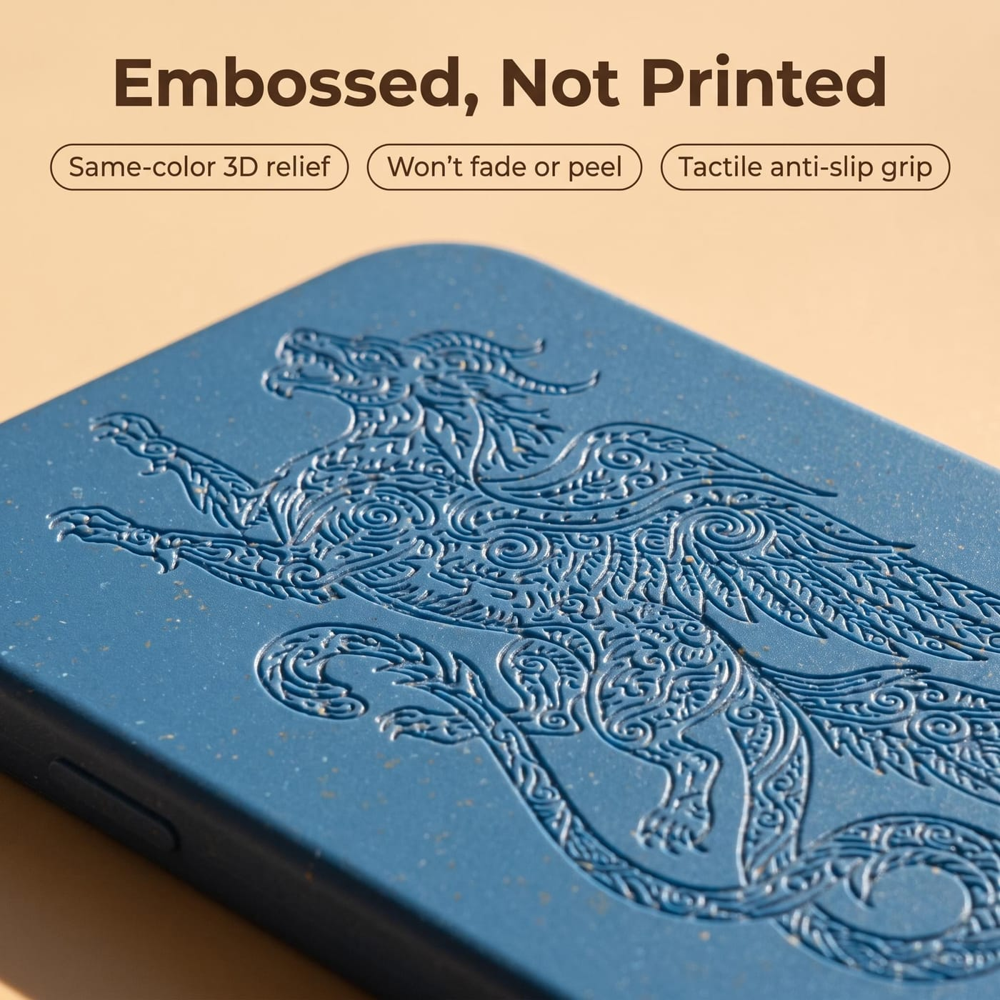
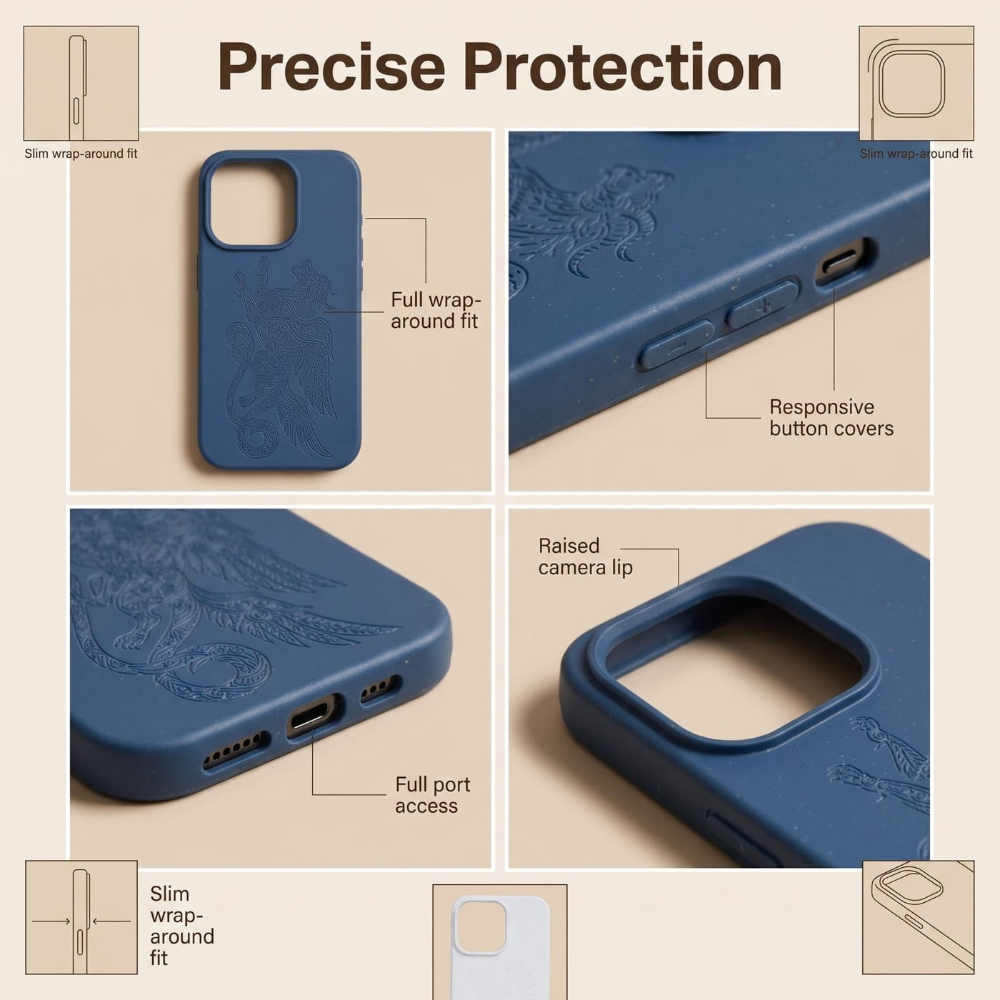
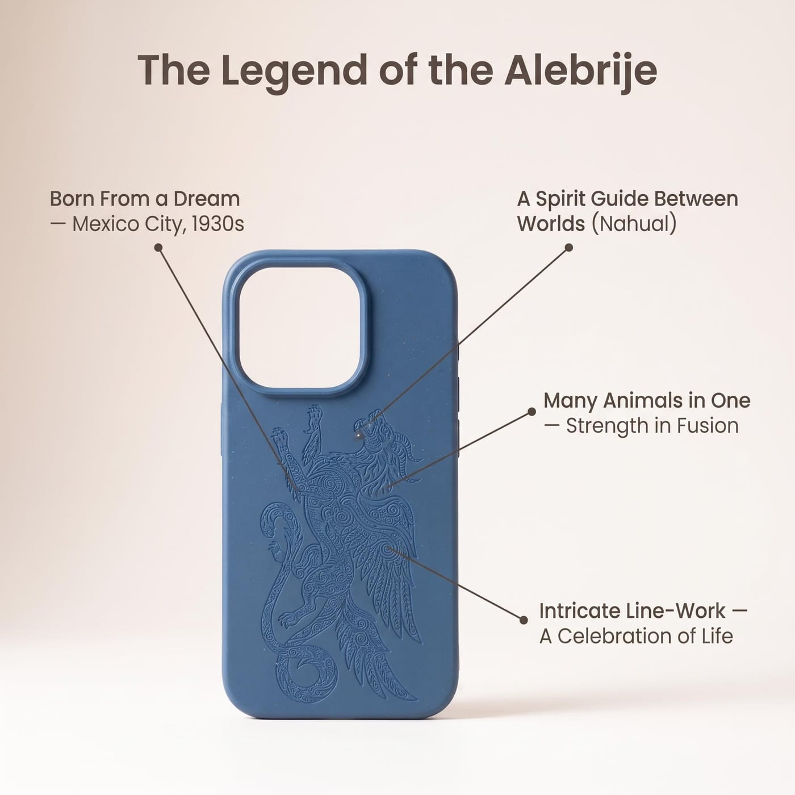
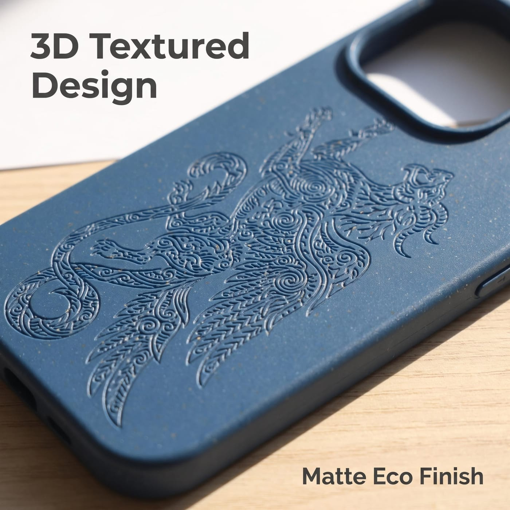
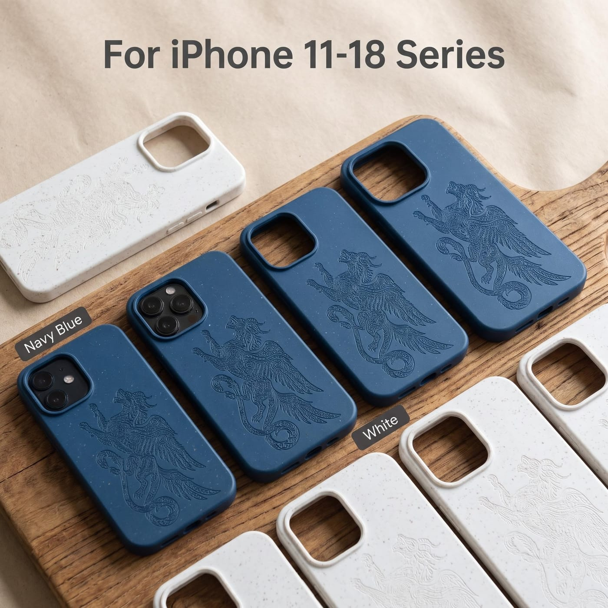

Funda Biodegradable Arte de Alebrijes
Un solo alebrije — la criatura espiritual de muchos animales del arte popular mexicano — plasmado en relieve del mismo color sobre una funda mate y biodegradable de paja de trigo.
El Diseño
El alebrije es una de las formas de arte popular más distintivas de México — una criatura fantástica ensamblada a partir de varios animales a la vez: un cuerpo felino o de jaguar, alas, cuernos de toro, una cola de serpiente enroscada, todo cubierto de densas espirales y marcas parecidas a plumas. La forma se remonta a Pedro Linares, un cartonero de la Ciudad de México que vio a estos seres en un sueño febril en la década de 1930; talladores de madera en Oaxaca convirtieron después la idea en las figuras pintadas de madera de copal por las que se conoce el estilo hoy.
En la creencia náhuatl, el alebrije se lee como un nahual — un guía espiritual que se mueve entre el mundo de los vivos y el de los ancestros, asociado con el Día de Muertos. Varios animales en un solo cuerpo representan la fuerza a través de la fusión; el trazo intrincado y en constante movimiento, una cultura que celebra la vida en voz alta.
Una gran criatura llena el dorso de la funda como un relieve 3D del mismo color — sin impresión, sin recubrimiento. La funda es de paja de trigo natural sobre una base biodegradable: mate, ligeramente flexible, moteada de salvado natural. Ocho colores, cortada para toda la gama de iPhone 11 a 18.
Artesanía y Estructura
En relieve, no impreso.

Una Criatura, En Relieve
Todo el alebrije está plasmado en la funda en su propio color — una textura dimensional sin capa de tinta que se desvanezca o se despegue.

Borde Elevado, Cobertura Total
El borde elevado de la cámara y el contorno delgado envolvente protegen las esquinas y los lentes; cubiertas de botones y puertos cortados a la medida de cada modelo.
Características Clave
Tres detalles que dan vida al diseño.

La Leyenda del Alebrije
Criatura nacida de un sueño, guía espiritual (nahual), varios animales en uno, y el trazo intrincado de una cultura que celebra la vida.

Acabado Mate de Paja de Trigo
Paja de trigo natural y una base biodegradable — mate suave, ligeramente texturizado, con finas motas naturales de salvado.

Ocho Colores
Rosa, amarillo, negro, blanco, verde, azul, rojo y verde oscuro — el mismo relieve en cada color.
¿Te interesa este diseño, o algo parecido?
Cuéntanos los modelos, cantidades y plazos que necesitas — confirmaremos el precio y pondremos una muestra en marcha.